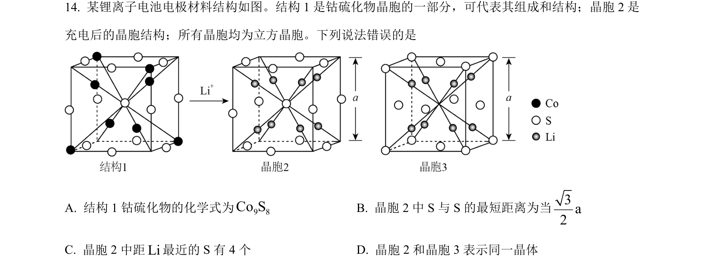
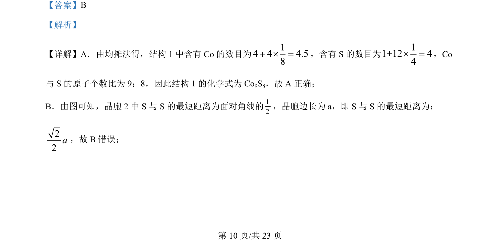
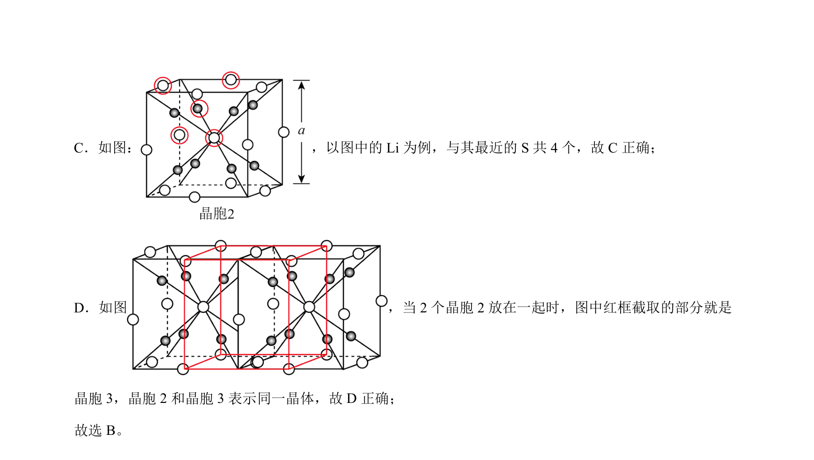

考点：均摊法 空间几何 配位数

该题通过晶胞结构考查均摊法计算化学式、最短距离及配位数判断。


📄 原 PDF 第 10 页：
素材/真题/吉林/2008-2024·（吉林）化学高考真题/2024年高考化学试卷（辽宁）（解析卷）.pdf
【答案】B 【解析】 【详解】A．由均摊法得，结构 1 中含有 Co的数目为14 4 4.58+ ´ =，含有 S 的数目为11+12 44´ =，Co 与 S 的原子个数比为 9：8，因此结构 1 的化学式为 Co9S8，故 A 正确； B．由图可知，晶胞 2 中 S 与 S 的最短距离为面对角线的12，晶胞边长为 a，即 S 与 S 的最短距离为： 22a，故 B错误； 。